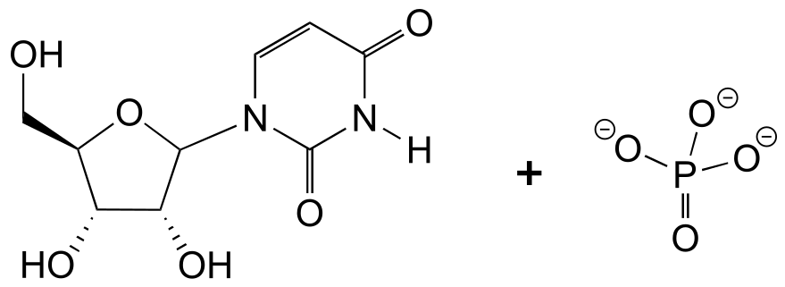
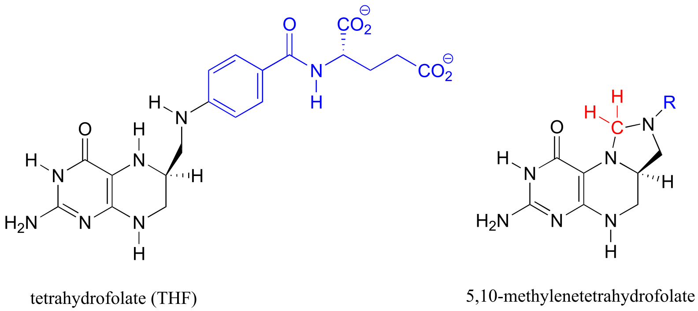
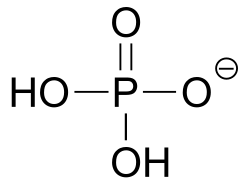
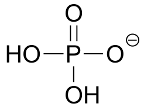
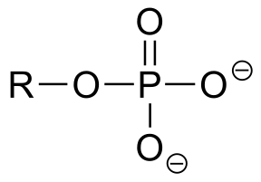
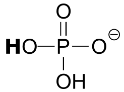
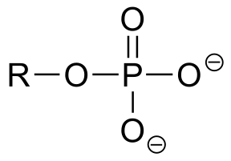
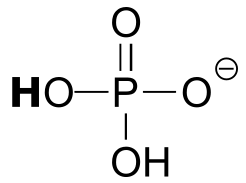
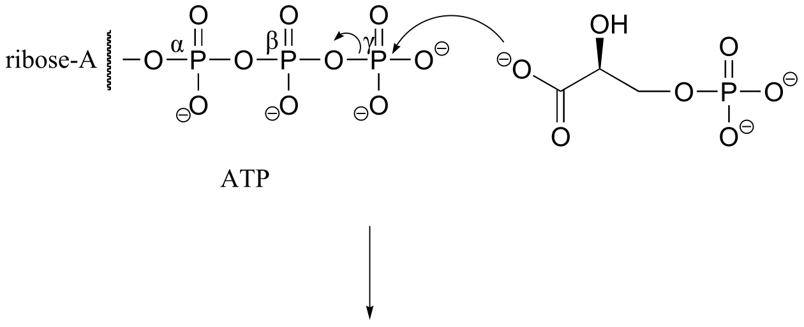
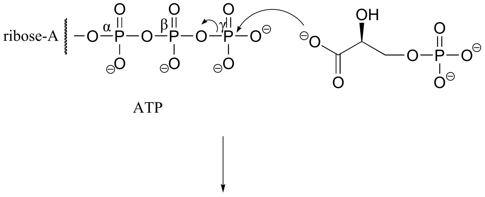

Table 1: Some characteristic absorption frequencies in IR spectroscopy
Contents
Tables
List of tables:
Table 1: Some characteristic absorption frequencies in IR spectroscopy
Table 2: Typical values for 1H-NMR chemical shifts
Table 3: Typical values for 13C-NMR chemical shifts
Table 4: Typical coupling constants in NMR
Table 5: The 20 common amino acids
Table 6: Structures of common coenzymes
Table 7: Representative acid constants
Table 8: Some common laboratory solvents, acids, and bases
Table 9: Examples of common functional groups in organic chemistry
Table 1: Some characteristic absorption frequencies in IR spectroscopy#
Bond type |
frequency (cm-1) |
|---|---|
C-H alkanes |
2950 – 2850 |
C-H alkenes |
3080 – 3020 |
C-H aldehyde |
~2900 |
C-H alkyne |
~3300 |
alkyne triple bond |
2250 – 2100 (s) |
alkene double bond |
1680 - 1620(s) |
carbonyl, ketone |
1725 – 1700 (s) |
carbonyl, aldehyde |
1740 – 1720 (s) |
carbonyl, ester |
1750 – 1730 (s) |
carbonyl, acid |
1725 – 1700 (s) |
carbonyl, amide |
1690 – 1650 (s) |
O-H, alcohols |
3600 – 3200 (s, broad) |
O-H, acids |
3000 – 2500 (broad) |
C-O, alcohols, esters, ethers |
1300 - 1000 |
s = strong absorbance
Table 2: Typical values for 1H-NMR chemical shifts#
Hydrogen type |
Chemical shift (ppm) |
|---|---|
RC**H**3 |
0.9 - 1.0 |
RC**H**2R |
1.2 - 1.7 |
R3C**H** |
1.5 – 2.0 |
<img src=”media/image713.png” |
|
style=”width:0.72222in;height:0.54653in” /> |
2.0 – 2.3 |
<img src=”media/image714.png” |
|
style=”width:0.88889in;height:0.49097in” /> |
1.5 – 1.8 |
RN**H**2 |
1 - 3 |
ArC**H**3 |
2.2 – 2.4 |
<img src=”media/image715.png” |
|
style=”width:0.86111in;height:0.17569in” /> |
2.3 – 3.0 |
<img src=”media/image716.png” |
|
style=”width:0.72222in;height:0.30556in” /> |
3.7 – 3.9 |
|
3.7 – 3.9 |
RO**H** |
1 - 5 |
<img src=”media/image718.png” |
|
style=”width:0.72222in;height:0.49097in” /> |
3.7 – 6.5 |
<img src=”media/image719.png” |
|
style=”width:0.75903in;height:0.75903in” /> |
5 - 9 |
Ar**H** |
6.0 – 8.7 |
<img src=”media/image720.png” |
|
style=”width:0.57431in;height:0.54653in” /> |
9.5 – 10.0 |
<img src=”media/image721.png” |
|
style=”width:0.66667in;height:0.52778in” /> |
10 - 13 |

Chemical shift values are in parts per million (ppm) relative to tetramethylsilane.
Table 3: Typical values for 13C-NMR chemical shifts#
| Carbon type | Chemical shift (ppm) |
|---|---|
| RCH3 | 13 - 16 |
| RCH2R | 16 - 25 |
| R3CH | 25 - 35 |
 |
18 - 22 |
 |
28 - 32 |
| RCH2NHR | 35 - 45 |
| RCH2OH | 50 - 65 |
 |
65 - 70 |
| ROCH2R | 50 - 75 |
 |
50 - 75 |
 |
115 - 120 |
 |
125 - 140 |
| aromatic carbon | 125 - 150 |
(carboxylic acid derivatives) |
165 - 185 |
 |
190 - 200 |
 |
200 - 220 |

Table 4: Typical coupling constants in NMR#
H-H coupling |
J (Hz) |
C-H coupling |
J (Hz) |
|
|---|---|---|---|---|
<img src=”media/image731.png” |
||||
style=”width:0.86111in;height:0.65764in” /> |
6 -8 |
<img src=”media/image732.png” |
style="width:0.62986in;height:0.62986in" /> | 125 - 130 |
|  | 2 - 3 | |
| 2 - 3 | |  | 150 - 170 |
|
| 150 - 170 |
|  | 12 - 18 | | | |
|
| 12 - 18 | | | |
|  | 6 - 12 | | | |
|
| 6 - 12 | | | |
|  | 0 - 2 | | | |
|
| 0 - 2 | | | |
|  | 6 - 10 | | | |
|
| 6 - 10 | | | |
|  | 1- 3 | | | |
| 1- 3 | | | |
Table 5: The 20 common amino acids#
 |
 |
 |
 |
 |
|---|---|---|---|---|
| Glycine (Gly, G) |
Alanine (Ala, A) |
Valine (Val, V) |
Leucine (Leu, L) |
Isoleucine (Ile, I) |
 |
 |
 |
 |
 |
| Phenylalanine (Phe, F) |
Tyrosine (Tyr, Y) |
Tryptophan (Trp, W) |
Methionine (Met, M) |
Cysteine (Cys, C) |
 |
 |
 |
 |
 |
Serine (Ser, S) |
Threonine (Thr, T) |
Arginine (Arg, R) |
Lysine (Lys, K) |
Histidine (His, H) |
 |
 |
 |
 |
 |
Proline (Pro, P) |
Glutamate (Glu, E) |
Aspartate (Asp, D) |
Glutamine (Gln, Q) |
Asparagine (Asn, N) |
Table 6: Structures of common coenzymes#

Table 5



#
Table 7: Representative acid constants.#
acid |
pKa |
conjugate base |
|---|---|---|
<img src=”media/image764.png” |
||
style=”width:0.83333in;height:0.86111in” /> |
-10 |
<img src=”media/image765.png” |
style="width:0.82431in;height:0.62986in" /> |
| HCl | -7 | Cl- |
| H3O+ | -1.7 | H2O |
|  | -1.4 |
| -1.4 |  |
|
|
|  | 1.0(i) |
| 1.0(i) |  |
|
|
|  | 2.2(ii) |  |
| HF | 3.2 | F- |
|
| 2.2(ii) |  |
| HF | 3.2 | F- |
|  | 4.6 |
| 4.6 |  |
|
|
|  | 4-5 |
| 4-5 |  |
|
|
|  | 5.3(ii) |
| 5.3(ii) |  |
|
acid |
pKa |
conjugate base |
|---|---|---|
<img src=”media/image778.png” |
||
style=”width:0.79653in;height:0.75903in” /> |
6.4 |
<img src=”media/image779.png” |
style="width:0.75903in;height:0.77778in" /> |
|  | 6.5(i) |  |
|  | 7.2(ii) |
| 6.5(i) |  |
|  | 7.2(ii) |  |
|
|
|  | 9.0 |
| 9.0 |  |
| HCN | 9.2 | CN- |
|
|
| HCN | 9.2 | CN- |
|  | 9.2 |
| 9.2 |  |
|
|
|  | 9.9(ii) |
| 9.9(ii) |  |
|
|
|  | 10.3(ii) |  |
| RSH | 10-11 | RS- |
| RNH3+ | 10 -11 | RNH2 |
|
| 10.3(ii) |  |
| RSH | 10-11 | RS- |
| RNH3+ | 10 -11 | RNH2 |
|  | 12.3(i) |
| 12.3(i) |  |
| H2O | 15.7 | OH- |
|
| H2O | 15.7 | OH- |
| acid | pKa | conjugate base |
|---|---|---|
 |
17 |  |
| RCH2OH | 16 | RCH2O- |
 |
19-20 |  |
RCCH terminal alkyne |
25 | RCC- |
| H2 | 35 | H- |
NH3 ammonia |
38 | NH2- |
All pKa values, unless otherwise noted, are taken from March, Jerry, Advanced Organic Chemistry, Fourth Edition, Wiley, New York, 1992.
(i) Silva, J.J.R. Fraústo da, The Biological Chemistry of the Elements: the Inorganic Chemistry of Life, 2nd Edition, Oxford, New York, 2001.
(ii)Lide, David R. (ed.) The CRC Handbook of Chemistry and Physics, CRC Press, Boca Raton, FL, 1995.
Table 8: Some common laboratory solvents, acids, and bases (fig 10)
Solvents

Acids

Bases
very strong bases:

weaker bases:

Table 9: Examples of common functional groups in organic chemistry
| alkane |  |
ketone |  |
|---|---|---|---|
| alkene |  |
aldehyde |  |
| alkyne |  |
imine (Schiff base) |
 |
| aromatic hydrocarbon |  |
carboxylic acid |  |
| alkyl halide |  |
ester |  |
| alcohol |  |
thioester |  |
| thiol |  |
amide |  |
| amine |  |
acyl phosphate |  |
| ether |  |
acid chloride |  |
| sulfide |  |
phosphate ester |  |
| phenol |  |
phosphate diester |  |